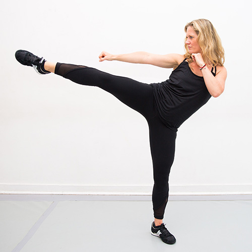
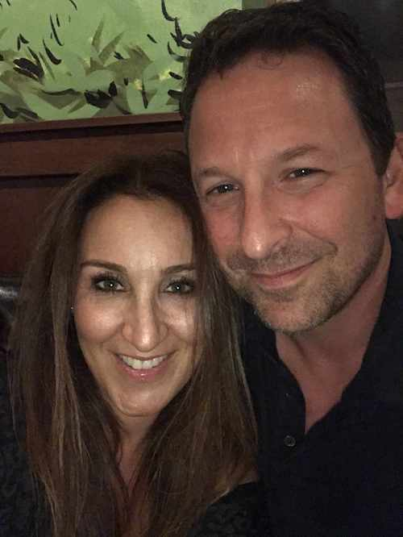
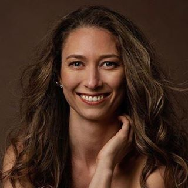
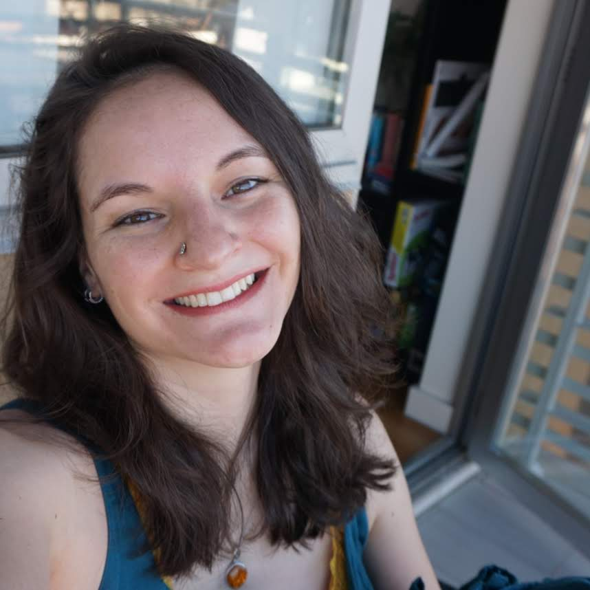
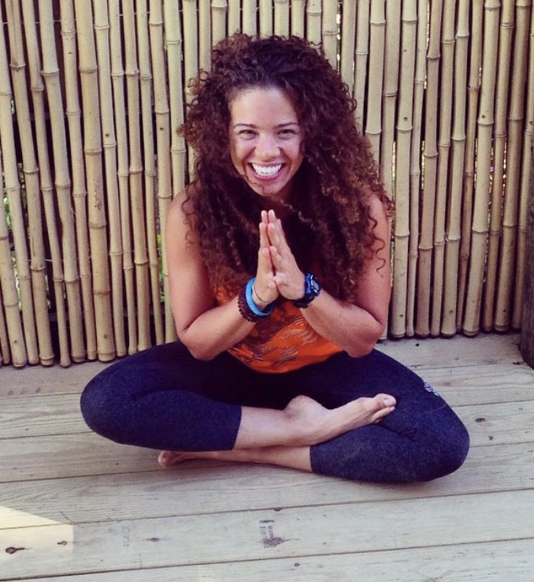
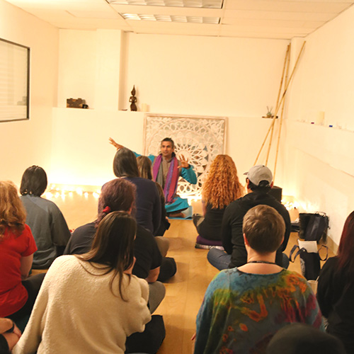
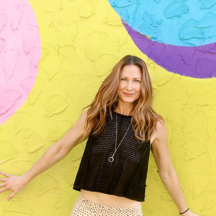
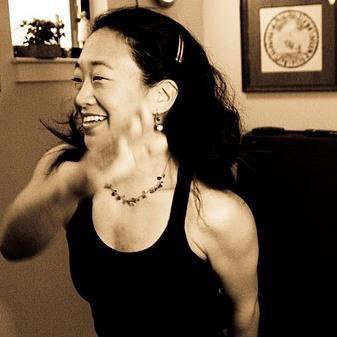

For a complete agenda visit our Program page
Speakers
Keynote: The New Era of Virtual Health (Began) in the Time of COVID-19
12:15PM-12:45PM EDT

Dr. David Rhew
Chief Medical Officer & VP of Healthcare, Worldwide Commercial Business, Microsoft
Lessons Learned – A Live Interview with a Doctor in China
This opening discussion will explore lessons learned from the COVID outbreak from the perspective of a doctor residing in China. It will further examine the role of virtualization in bringing about advances in health and healthcare in a post-COVID world.
11:15AM-11:30AM EDT
Dr. Ewelina Biskup
Shanghai University of Medicine and Health Sciences

Ron Gutman
Curator & Founder of FestiHealth | Entrepreneur | Stanford Lecturer | Inventor | Investor
Mental Well-being in a World of Distancing
This opening panel will discuss the implications of COVID on our mental health and well-being. It will explore how the shift toward Virtual Mental Health could facilitate better access to prevention and treatment services for mental health conditions.
11:30AM-12:15PM EDT

Dr. Kimberlyn Leary
Associate Professor of Psychology at Harvard Medical School | Lecturer in Public Policy at the Harvard Kennedy School
Dr. Antonella Santuccione Chadha
Founder & CEO, Women’s Brain Project

Dr. Steven Chan
Clinical Assistant Professor at Stanford University School of Medicine | Medical Director of Palo Alto VA Health
Annabel Wilson
Founding Director of Living Ashram
Virtual Excellence: Better Health at a Lower Cost
Advances in Virtual Health are dramatically lowering the cost to deliver better health and healthcare services. This panel will showcase examples where Virtual Health has been able to deliver healthcare in a measurable and financially sustainable way.
1:00PM-1:30PM EDT
Sean Mehra
Co-Founder & Chief Strategy Officer of HealthTap

Paul Baldassari
EVP: Head of operations strategy and Engineering at Flex
Vanessa Candeias
Former Head of Global Health and Healthcare of the World Economic Forum and Executive Committee Member | Technical Officer World Health Organization (WHO)
Dr. David Rhew
Chief Medical Officer & VP of Healthcare, Worldwide Commercial Business, Microsoft
Women’s Health in the Virtual Age
This panel will discuss the transformation of women’s health through advances in technology in a post-COVID world. It will examine the role technology plays in enabling women to lead healthier lives. It will also explore strategies to facilitate female leadership and development in Virtual Health.
1:30PM-2:15PM EDT

Dr. Jeff Livingston
Head OBGYN Surgeon at Baylor | Head of MacArthur OBGYN

Dr. Lyndsey Harper
Founder & CEO of Rosy
Kathrin Folkendt
Founder & CEO of Femtech Insider
Back to Work in the "New Normal"
2:15PM-3:00PM EDT

Dr. Peter Yellowlees
Chief Wellness Officer & Professor of Psychiatry at University of California, Davis | Former Head of American Telemedicine Association
Dr. Nina Vasan
Executive Director, Brainstorm: The Stanford Lab for Mental Health Innovation and Chief Medical Officer, Real
Dr. Olivier Oullier
President of EMOTIV | Former Head of Strategy at The World Economic Forum
Keynote: Between Bricks & Clicks: Redefining the Future of Healthcare
3:00PM-3:30PM EDT

Tom Lee
Founding CEO One Medical, Galileo, ePocrates
The Promise and Peril of Big Data and Artificial Intelligence in the New Normal of Virtual Health
Big data and artificial intelligence are ushering in new ways to prevent, diagnose and treat a variety of medical conditions. This panel will explore the ways in which data and AI can improve access, triage, and medical care during the time of COVID.
3:30PM-4:05PM EDT
Dr. Geoff Rutledge
Chief Medical Officer of HealthTap | Fellow of American College of Medical Informatics | Double Board-Certified Physician

Joseph Wood
Dr. Joseph Wood is a board certified endocrinologist who headed up virtual health at Dwight D. Eisenhower Army Medical Center, Ft. Gordon, GA.

Dr. Gillian Christie
Harvard School of Public Health

Corinna Lathan
Dr. Corinna Lathan is a neuroscientist, technology pioneer, a social advocate and the CEO of AnthroTronix
Mindfulness and the Virtual Mind
This fireside conversation will examine how the big shift in the way we live our lives and interact with other people due to COVID-19 creates big opportunities and serious risks to our mind and mindfulness.
4:05PM-4:25PM EDT

Aneel Chima
Director of Health and Human Performance at the Stanford School of Medicine & Director of the Stanford Flourishing Project
Making Sense of Sensors, Devices, and Digital Therapeutics
Smaller and faster devices and sensors combined with advances in software programs and holistic patient experiences in managing conditions are reshaping how consumers and caregivers manage their health and well-being. This panel will demonstrate the potential for sensors, devices, and digital therapeutics to streamline health and care to get better results more efficiently and cost-effectively.
4:25PM-5:00PM EDT

Don Jones
CEO of Cardiff Ocean Group | Chief Digital Officer of Scripps Translational Research Institute | Former Head of Healthcare at Qualcomm

Mark Milton Edwards
Head of Digital Health Solutions at Teva Pharmaceuticals

Joel Rabasco
Chief Product Officer, BOYDSense, Inc.

Kal Patel
M.D., MBA - CEO & Co-Founder - BrightInsight

Vik Panda
Dreem’s Managing Director for North America
Food for Thought: Immunity Through Better Nutrition?
This panel will explore the role of food and nutrition in building immunity during COVID and beyond. The notion of food as medicine will provide the foundation for this discussion, with a further examination of growing and eating locally and sustainably to protect the environment.
5:15PM-6:00PM EDT
Dr. William Li
Head of the Angiogenesis Foundation
Diane Hatz
Founder & Activator Change Food, Boma Grow, USA & Whole Healthy Group LLC

Aran Goldstein
Chief Chef Advocate, Plates
Dr. Shebani Sethi Dalai
Founding Director, Metabolic Psychiatry Clinic Department of Psychiatry and Behavioral Sciences Stanford University School of Medicine
When Virtual Help is Always There
This fireside conversation will discuss how immediate and ubiquitous access to mental health care services through simple and readily available technology can make a huge difference in the mental health and well-being of people everywhere and save lives.
6:00PM-6:20PM EDT
Nancy Lublin
CEO of Crisis Text Line | Creator of Dress for Success | Former CEO of Do Something, Inc.
Starting Up Virtual Health With a Competition
COVID-19 changed the way we access health and care, creating opportunities for start-up companies to drive innovation in Virtual Health. This panel conversation brings together StartX and FestiHealth to announce a new startup competition on Virtual Health with the support of the American Heart Association and the Stanford Lab for Mental Health Innovation.
6:20PM-6:45PM EDT
Cameron Teitelman
Founder and Chairman, StartX and Founder and CEO, Nexus Events
Dr. Nina Vasan
Founder & Executive Director, Brainstorm: The Stanford Lab for Mental Health Innovation | Clinical Assistant Professor of Psychiatry, Stanford University School of Medicine | Chair, American Psychiatric Association Committee on Innovation
Ron Gutman
Curator & Founder of FestiHealth | Entrepreneur | Stanford Lecturer | Inventor | Investor

Patrick Wayte
SVP, Center for Health Technology & Innovation, American Heart Association
Closing Remarks and Awards Ceremony
6:45PM-7:00PM EDT
Ron Gutman
Curator & Founder of FestiHealth | Entrepreneur | Stanford Lecturer | Inventor | Investor
Virtual Cooking Class: Healthy Brunch and Dinner with Celebrity Chefs
10:30AM-11:00AM EST

Malika Rodrigues
Alma Foods, Portugal
7:00PM-8:00PM EDT
Aran Goldstein
Chief Chef Advocate, MyPlates
Supporters

Activities
INTENSATI
1:00PM-1:55PM EDT
Barbara
3 blocks: I choose to thrive to be fully alive, the good in me is what I see. I accept myself exactly how I am, one day at a time the choice is mine. I give myself the gift of love, the strength and courage to rise above.
From a place of love, push yourself to rise above (high intensity)
@barbarasennrich
2:00PM-2:40PM EDT

Liv
Wellbeing is a choice
Heart-centered meditation as part of the practice
@livbehre
3:00PM-3:55PM EDT

Dawn
I IMAGINE: with my imagination, I am training my mind, I am the author of my life, the story is mine. I see my future, I imagine success, I savor the feeling, I expect the best. I follow my bliss, I am living my truth, I have a vision, I am on a mission. I am guided, I am free, I now trust, the love in me.
Chakra energy healing meditation and breath work
the_sati_coach / @mindbodycounselingcoaching
5:00PM-5:40PM EDT

Candace
I Belong - I am powerful beyond measure, I am stronger than I seem, I am braver than I think, I am blessed with all I need, I am enough, I have enough, I am grounded today, I am empowered and safe
Rampage of Self-Appreciation and Self Love Hug also a lower body series
@prbycandacekluba / Candace Kluba
4:00PM-4:45PM EDT

Sari
All I need is within me now, my destiny is my victory, my heart knows how.
A session to believe in your dreams knowing that all you need is within you now. Draw it out with the mindful energy of heart power.
zenSari_ / Sari Dana
11:15AM-12:15PM EDT
Rachel
It's time to choose. Let our voices sing. Lets shake things up. Now let us begin!
Heart pumping cardio workout. Affirmations to help us all move through this time.
@RachelKesselman / Rachel Yampolsky Kesselman
11:15AM-12:00PM EDT

Yvette Cronje
Yvette designs and creates experiences in the tech industry as a UX and Design specialist. When she is not being creative behind a screen, she is being creative with spreading wellness and health to her community. As an ex-ballerina, bodybuilder, intenSati leader and triathlete, she lives and breathes the message of a healthy body, mind, and spirit to help people find healing. Her philosophy is to build a life of gratitude guided by love, 100% energy, effort, and responsibility, and to give grace in the moment.
@yvacronje
YOGA
5:00PM-6:00PM EDT
Phoebe
Full Body Funky Flow
Full body opening and playfulness, intermediate level yoga vinyasa class.
@phoebe.jenkins / @integrativeacademyofmovement
2:00PM-2:55PM EDT

Anne Koller
Free to Feel Art & Yoga
Kundalini Yoga and art practice that systematically opens the body and energy channels to feel into our emotions and fully express them through drawing, writing or painting without judgement.
@annekoller / @annekollerart
3:00PM-4:00PM EDT
Astrid Locker
Flow into gratitude
In this class, we will move mindfully through a sequence of poses that, merged together, will build up into a complete flow that is both accessible and empowering. We will end class with a gratitude meditation.
@astridinyoga / astridinyoga
11:15AM-12:15PM EDT

Christina Gdisis
Slow Flow Yoga
A vinyasa/hatha yoga class that creates a space to discover and engage with the subtleties of the body and mind through a slower and reflective pace.
@christina.ahimsa / @ahimsayogabychristina
1:00PM-1:45PM EDT

Nicole Duff
Vinyasa Power Flow
A playful intermediate vinyasa yoga class focused on marrying the breath with movement to create a deep sense of presence
@duffyoga
4:00PM-5:00PM EDT
Natalia
Access Your Heart
Gentle class with mindful movements and stretches that help access your heart to ease stress and anxiety. Class ends with a tender forgiveness meditation that will actívate peace and leave you feeling safe and loved.
@iamwellnesswarrior
MEDITATION
2:00PM-2:30PM EDT

Anna
Clearing blocks to feeling exactly how you want to feel!
Come join me for this 30 minute practice where we will clear anything blocking you from feeling exactly how you want to feel.
@awesomelyanya / Anna Krishtal
1:00PM-1:30PM EDT

Mae Deevy, CHt
Hypnotherapy/Aromatherapy
Emotional Freedom - from the inside out: leveraging our own brain’s power to feel how we want to feel
@OilObsessedYogi / Mae Deevy
4:00PM-4:30PM EDT
Mahesh (Shiva)
Introspective Mindful Visualization
This session in mindful visualization will activate the exact same neural networks to strengthen the connection between the brain and body. All while being in a relaxed state, enabling you to see yourself in a new light.
@soundheal.me / Mahesh.Natrajan.7
3:00PM-4:00PM EDT
Annabel
Overcoming fear, anxiety and overwhelm in times of transition and uncertainty
Providing a clear path to Whole Human health through science & evidence based practices that seamlessly interweave neuroscience, psychology, physiology, mindfulness spirituality and multiple healing modalities.
@livingashram
5:00PM-6:00PM EDT
Sarah
Self-Healing Guided Meditation
This experience is about finding you inner power of self-healing. We tend to get so caught up in our minds that we forget our ability to let go of blocages. By following this meditation which will end with a ten minutes sound journey you will open yourself to your magical inner world.
@sarah_Bl / sarahblhealer
11:15AM-12:15PM EDT

Debra Lynne Driscoll
Taking a Deep Breath and Diving Under the Wave of Grief.
In this workshop Debra Lynne Driscoll, author and grief guide, will share with you her personal story of grief, through the loss of her lover, father and son, and how she has learned to not run, not freeze, but to dive deep when the waves come.
@debralynnedriscoll / Debralynnedriscoll.com
FITNESS
5:00PM-5:55PM EDT
Tootsie Olan
danceFLOORED
The signature cardio dance class by Tootsie Olan. new combination every class. easy to follow. low impact on the body. high voltage for the soul. NYC born method. cult-following + addicting. all levels so very welcome.
@tootsieolan / Tootsie Olan
2:00PM-3:00PM EDT

Karen Koutsavlis
Bodyweight Blast | Full Body Workout
No equipment? No problem! This total body workout will take you through a dynamic warm up, strengthen your muscles, include some fun cardio intervals, and finish with some mobility work...using only your bodyweight.
www.NE360Fitness.com / @NE360Fitness
4:00PM-4:45PM EDT
Sandra M. Kim
Zumba Dance
High energy dancing, focusing on Latin, K-pop, Hip-Hop, Bollywood music.
zumba_with_happybear / Zumba with Happybear!
3:00PM-3:45PM EDT

Amy Bantham
Strength and Interval Training
Strength training combined with (just a few!) cardio intervals to build your muscle strength and endurance. No equipment required beyond what you can find in your kitchen or home office.
@movetolivemore / movetolivemore.com
1:00PM-1:45PM EDT

Claudia Busto
HIIT & Pilates (High intensity & Pilates blend)
This will be a fun HIIT style workout (cardio mixed with bodyweight resistance moves), followed by a Pilates toning flow! Just a mat or carpet is needed.
@BRONXBOMBERFIT
Coffee & Juice Bar
COMEDY
12:45PM-1:00PM EDT

Missy Modell
Comedian specializing in pop parody and founder of creative consultancy group Yes Mam
@missymodell / MissyModell
3:40PM-3:55PM EDT

Adam Mamawala
Highly acclaimed stand-up comedian and actor based out of New York City
@adammamawala / www.adammamawala.com
1:45PM-2:00PM EDT

Christina Wolfram
Mental-health comedian
MAGICIAN
2:30PM-2:45PM EDT

Dennis Kim
Incredible close-up illusionist and magician
@thecloseupartist
MUSICIANS
4:00PM-5:00PM EDT

Homesick Elephant
Husband-wife indie/folk duo performing original songs
@homesickelephant / www.homesickelephant.com
5:00PM-5:15PM EDT

Eoin Harrington
Irish singer and songwriter performing musical tunes
Doctors

Deborah Ungerleider
Dr. Ungerleider is an MD specializing in Pediatrics. She practices in Hackensack, NJ.

Ankush Bansal
Dr. Bansal is an MD specializing in Internal Medicine. He practices in Colorado and New Hampshire.

Navita Modi
Dr. Modi is an MD specializing in Obstetrics and Gynecology. She practices in Lanham, MD.

Elizabeth Finley-Belgrad
Dr. Finley-Belgrad is an MD specializing in Child Psychiatry. She practices in Canfield, OH.

Ashesh Patel
Dr. Patel is an MD specializing in Internal Medicine. He practices in Washington, DC.

Kathryn Seifert
Dr. Seifert is a PhD specializing in Clinical Psychology. She practices in Easton, MD.

Ralph Boling
Dr. Boling is a DO specializing in Obstetrics and Gynecology. He practices in Kirksville, MO.

David Hicks
Dr. Hicks is a DO specializing in Family Medicine. He practices in Clearwater, FL.

Sadaf Mustafa
Dr. Mustafa is an MD specializing in Internal Medicine. She practices in Baltimore, MD.

Marc Serota
Dr. Serota is an MD specializing in Pediatrics, Allergy and Immunology, and Dermatology. He practices in Denver, CO.

Daniel Schainholz
Dr. Schainholz is an MD specializing in Ophthalmology. He practices in San Francisco, CA.

Ogochukwu Okpala
Dr. Okpala is an MD specializing in Obstetrics and Gynecology. She practices in Hendersonville, NC.

Kurt Vernon
Dr. Vernon is an MD specializing in Internal Medicine. He practices in North Carolina.

Silviu Pasniciuc
Dr. Pasniciuc is an MD specializing in Internal Medicine. He practices in Syracuse, NY.

Wendy Epstein
Dr. Epstein is an MD specializing in Dermatology. She practices in Holtsville, NY.

Frank Kuitems
Dr. Kuitems is an MD specializing in Internal Medicine. He practices in Kingsland, GA.

Victor Cachia
Dr. Cachia is a DPM specializing in Pediatric Surgery. He practices in Mission Viejo, CA.

Sheila Bloomquist
Dr. Bloomquist is an MD specializing in Family Medicine. She practices in Madrid, Spain.

Mitchel Schwindt
Dr. Schwindt is an MD specializing in Emergency Medicine. He practices in Bemidji, MN.

Bill Byung-Il Choi
Dr. Choi is an MD specializing in Cardiology. He practices in Wisconsin.
Presenters
HealthTap
www.healthtap.com
Dreem
dreem.com
Emotiv
www.emotiv.com
MindCotine
www.mindcotine.com
Happy Feed
www.happyfeed.co

Nurse 1:1
nurse-1-1.com
SleepPhones
www.sleepphones.com

Wisdo
wisdo.com
Panion
panion.com
Hearme
www.hearme.app
In the Rooms
www.intherooms.com
Klaatch
www.klaatch.com
Living Ashram
livingashram.com
Revita5
www.revita5.com
SuperBetter
www.superbetter.com
NeuroFlow
www.neuroflow.com
Bisu Body Coach
www.bisu.bio
Levels Health
www.levelshealth.com
Memotext
www.memotext.com
Sumondo
www.sumondo.co
Uplift
www.uplift.com
Zenia
zenia.app
Vivante Health
vivantehealth.com
Skylyte
www.skylyte.io

Crisis Text Line
www.crisistextline.org
Foresight
foresight.org
The mental health fund
www.thementalhealthfund.org
Heal
heal